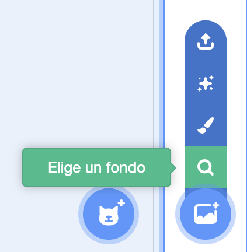
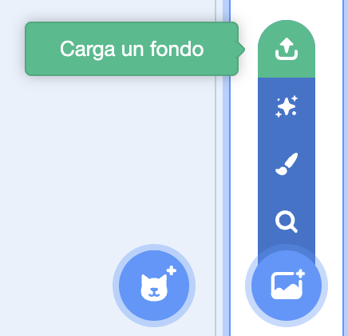
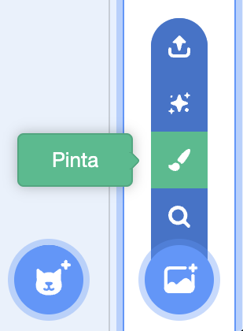
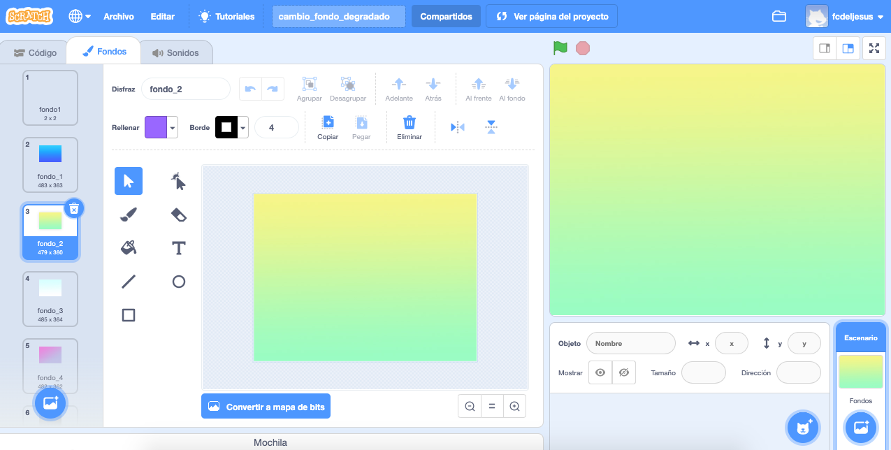
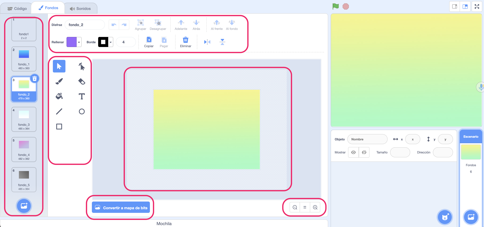

Aunque ya has investigado un poco el entorno de programación de Scratch, existen otros aspectos en los que hay que profundizar para conseguir el reto final que te propuse al principio.
En primer lugar vas a conocer algo mas sobre el fondo.
Seguro que ya le has dado al botón, pero no sabes para que sirve exactamente.
1. Un botón con ...
¿Has observado el botón de color azul que hay en la parte inferior derecha del entorno de Scratch?
Seguro que te ha llamado la atención y le has dado, ¿pero sabes para que sirve? ¿o cuál es su función?
Te invito a que explores todas tus opciones, seguro que eres capaz de averiguar para que sirve cada una de las opciones que tiene.
Lumen dice ¿No encuentras el botón?
Busca esta zona en el entorno de programación de scratch. Es parecido a montaña con un símbolo mas.
2. ¿Con cuál te quedas?
Seguro que ya has pulsado el botón azul que esta situado en la parte baja de la derecha del entorno de Scratch.
A continuación vas a realizar una serie de ejercicios para comprender mejor cual es la función de ese botón.
Opción A: De la biblioteca
Scratch tiene definida una librería (biblioteca) de fondos en la que podrás encontrar un conjunto de imágenes para poder usarlas como fondos en tus proyectos.
Pulsa sobre el botón que se muestra en la imagen y elige uno, verás que están ordenado por categorías e incluso hay un buscador.

Opción B: Elige bien
A las siguientes oraciones les faltan palabras, elige la correcta en cada caso.
Opción C: El mio propio
Quizás no hayas encontrado un fondo que te guste mucho.
En este ejercicio vas a realizar un dibujo en tu cuaderno, una vez que lo termines vas a subirlo a tu proyecto de scracth.
Para subirlo vas a usar el siguiente botón:

Opción D: Lo pinto
Dibuja tu propio escenario, para ello usa las herramientas que hay en el propio entorno de scracth, pulsa el botón que se muestra en la imagen.

Una vez que termines, enseña tu dibujo al resto de compañeros y compañeras de la clase.
3. Ponlo a tu gusto
Esta imagen, corresponde a la zona de trabajo de los fondos en Scracth. Con la ayuda de una compañera o compañero de clase, debes de intentar deducir para que sirve cada uno de los elementos que aparecen.
En tu cuaderno, haz una lista de los elementos y una breve descripción de la función de cada uno de ellos.

Lumen dice ¿No sabes en qué fijarte?
Mira con atención la siguiente imagen. Puedes ver las zonas más importantes destacadas.
